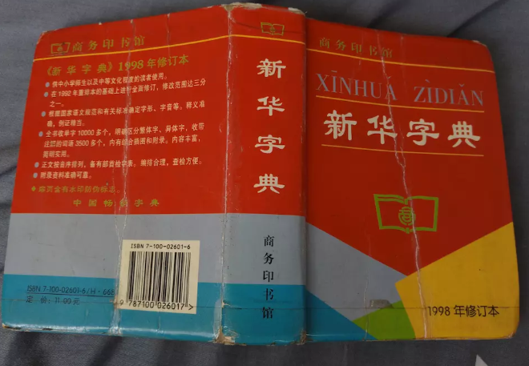
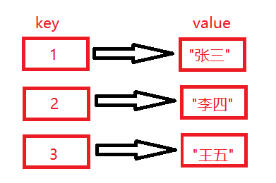

7.4 Map
前面我们学习了GO语言中数组，切片类型，但是我们发现使用数组或者是切片存储的数据量如果比较大，那么通过下标来取出某个具体的数据的时候相对来说，比较麻烦。例如：
names := []string{"张三","李四","王五"}
fmt.Println(names[2])
现在要取出切片中存储的“王五”，那么需要数一下对应的下标值是多少，这样相对来说就比较麻烦。有没有一种结构能够帮我们快速的取出数据呢？就是字典结构。
说道字典大家想到的就是：

在使用新华字典查询某个字，我们一般都是根据前面的部首或者是拼音来确定出要查询的该字在什么位置，然后打开对应的页码，查看该字的解释。
GO语言中的字典结构是有键和值构成的。
所谓的键，就类似于新华字典的部首或拼音，可以快速查询出对应的数据。
如下图所示：

通过该图，发现某个键（key）都对应的一个值(value)，如果现在要查询某个值，直接根据键就可以查询出某个值。
在这里需要注意的就是字典中的键是不允许重复的，就像身份证号一样。
7.4.1字典结构定义
map[keyType]valueType
定义字典结构使用map关键字，[ ]中指定的是键(key)的类型,后面紧跟着的是值的类型。
键的类型，必须是支持==和!=操作符的类型，切片、函数以及包含切片的结构类型不能作为字典的键，使用这些类型会造成编译错误：
dict := map[[]string]int{} //err invalid map key type []string
下面定义一个字典m,键的类型是整型，值的类型是字符串。
var m map[int]string
fmt.Println(m)
定义完后，直接打印，结果为空(nil)。
注意：字典中不能使用cap函数，只能使用len( )函数。len( )函数返回map拥有的键值对的数量
var m map[int]string
fmt.Println(len(m))
以上代码值为0，也就是没有值。
当然也可以使用make( )函数来定义，如下所示：
m2 := make(map[int]string)
fmt.Println(m2)
fmt.Println(len(m2))
以上代码值为0，也就是没有值。
当然也可以指定容量。
m2 := make(map[int]string,3)
fmt.Println(m2)
fmt.Println(len(m2))
输出的len值还是0，因为这里并没有赋值。
接下来可以给字典m2进行赋值，并且指定容量，如果容量不够自动扩容。
m2 := make(map[int]string,3)
m2[1] = "张三"
m2[2] = "李四"
m2[3] = "王五"
fmt.Println(m2)
fmt.Println(len(m2))
可以直接使用键完成赋值，再次强调键是唯一的，同时发现字典m2的输出结果，不一定是按照赋值的顺序输出的，每次运行输出的顺序可能都不一样，所以这里一定要注意：map是无序的，我们无法决定它的返回顺序，所以，每次打印结果的顺利有可能不同。
map也可以定义完成后直接进行初始化
m4 := map[int]string{1:"make",2:"Go"}
fmt.Println(m4[1])
fmt.Println(m4[2])
7.4.2打印字典中的值
（1）可以直接通过键输出，如下所示：
m4 := map[int]string{1:"make",2:"Go"}
fmt.Println(m4[1])
fmt.Println(m4[2])
（2）通过循环遍历的方式输出
m4 := map[int]string{1:"make",2:"Go"}
for key,value := range m4 {
fmt.Println(key)
fmt.Println(value)
}
输出的顺序是无序的。
(3)在输出的时候，还可以进行判断。
m4 := map[int]string{1:"make",2:"Go"}
value,ok := m4[1]
if ok == true{
fmt.Println(value)
}else{
fmt.Println("key不存在")
}
第一个返回值为key所对应的value, 第二个返回值为key是否存在的条件，存在ok为true。
（2）删除map中的某个元素。
根据map中的键，删除对应的元素，也是非常的方便。
如下所示：
m4 := map[int]string{1:"make",2:"Go"}
delete(m4,1) //删除key为1的内容
fmt.Println(m4)
（3）map作为函数参数是引用传递。
func test(m map[int]string){
delete(m,1)
}
func main(){
m4 := map[int]string{1:"make",2:"Go"}
test(m4)
fmt.Println(m4)
}